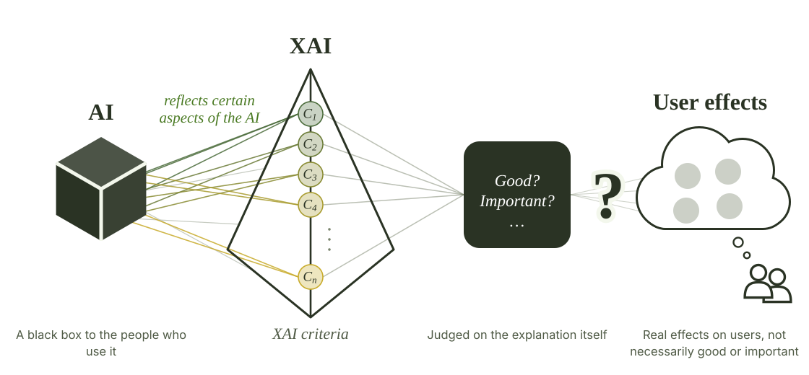

What Makes Explainable AI “Good” for End Users?
XAI evaluation frameworks recommend many desirable properties for explanations, mostly judged by the technical artifact itself. We asked a different question: do those recommended properties actually serve the people reading the explanations?

Methods
- Start from the frameworks Took the properties that XAI evaluation frameworks recommend for guiding and optimizing explanation design.
-
Formative study with the general public
Quantified the effects of those recommended properties on end users in everyday AI scenarios. This is the quantitative half of a mixed-methods project; the qualitative half appeared at DIS 2025.
N = 87 end users - From results to design guidance Distilled the results into a goal-driven approach that integrates human values into XAI design.
Key Findings
Comprehensibility comes first
Of the recommended properties, comprehensibility was the one end users valued most.
Some advice backfires
Frequently advocated properties such as contrastivity may have overall negative effects on end users.
Contributions
- Bridged the gap between XAI design and its impact on end users, who are affected by XAI in non-neutral ways.
- Argued for a goal-driven, reverse-engineering approach that starts from human values and works back to XAI properties.
- Offered practical guidance for user-centered XAI in everyday contexts.
Related
Cite
Lingqing Wang, Yifan Liu, and Ashok K. Goel. 2025. “Good” XAI Design: For What? In Which Ways? In Extended Abstracts of the CHI Conference on Human Factors in Computing Systems (CHI EA '25). ACM. https://doi.org/10.1145/3706599.3720036